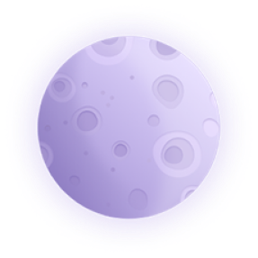

Космос
нас ждет!
нас ждет!

Меркурий
ближайшая к Солнцу планета. Ни воды, ни воздуха на Меркурии нет.
Из-за того что Меркурий так близок к светилу, дневная температура на этой планете почти +450°С.
Из-за того что Меркурий так близок к светилу, дневная температура на этой планете почти +450°С.

Эти названия не случайны: Венеру можно увидеть вечером, в лучах заходящего Солнца, или утром, перед самым восходом.

Земля
Земля является третьей по удаленности от Солнца планетой. Из всех известных науке планет только на Земле имеются кислородосодержащая атмосфера, обширные водные океаны, а также самое главное — биологическая жизнь.
Интересно, что по своим размерам Земля занимает 5-ое место среди остальных планет нашей солнечной системы, уступая таким газовым гигантам как юпитер, Сатурн, уран и Нептун.
Интересно, что по своим размерам Земля занимает 5-ое место среди остальных планет нашей солнечной системы, уступая таким газовым гигантам как юпитер, Сатурн, уран и Нептун.